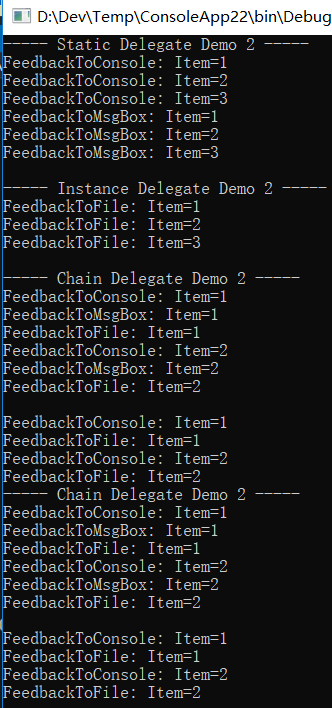
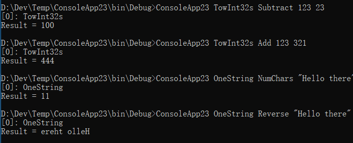
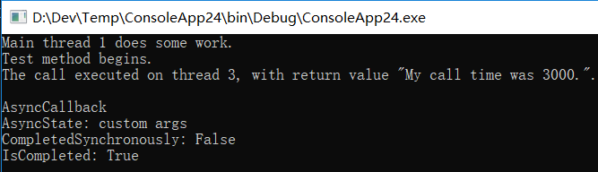

委托
作者：追风剑情 发布于：2021-1-22 9:20 分类：C#
本章要讨论回调函数。回调函数是一种非常有用的编程机制，它的存在已经有很多年了。Microsoft.NET Framework 通过委托来提供回调函数机制。不同于其他平台(比如非托管C++)的回调机制，委托的功能要多得多。例如，委托确保回调方法是类型安全的(这是 CLR 最重要的目标之一)。委托还允许顺序调用多个方法，并支持调用静态方法和实例方法。
C“运行时”的 qsort函数获取指向一个回调函数的指针，以便对数组中的元素进行排序。在Microsoft Windows 中，窗口过程、钩子过程和异步过程调用等都需要回调函数。在.NETFramework 中，回调方法的应用更是广泛。例如，可以登记回调方法来获得各种各样的通知，例如未处理的异常、窗口状态变化、菜单项选择、文件系统变化、窗体控件事件和异步操作已完成等。
在非托管C/C++中,非成员函数的地址只是一个内存地址。这个地址不携带任何额外的信息,比如函数期望收到的参数个数、参数类型、函数返回值类型以及函数的调用协定。简单地说，非托管C/C++回调函数不是类型安全的(不过它们确实是一种非常轻量级的机制)。
.NET Framework 的回调函数和非托管 Windows 编程环境的回调函数一样有用，一样普遍。但是，.NET Framework 提供了称为委托的类型安全机制。为了理解委托，先来看看如何使用它。以下代码演示了如何声明、创建和使用委托：
using System;
using System.IO;
namespace ConsoleApp22
{
//声明一个委托类型，它的实例引用一个方法，
//该方法获取一个Int32参数，返回void
internal delegate void Feedback(Int32 value);
class Program
{
static void Main(string[] args)
{
StaticDelegateDemo();
InstanceDelegateDemo();
//Demo1与Demo2写法不同，生成的IL代码是相同的
ChainDelegateDemo1(new Program());
ChainDelegateDemo2(new Program());
Console.ReadLine();
}
private static void StaticDelegateDemo()
{
Console.WriteLine("----- Static Delegate Demo 2 -----");
Counter(1, 3, null);
Counter(1, 3, new Feedback(Program.FeedbackToConsole));
Counter(1, 3, new Feedback(FeedbackToMsgBox));//前缀"Program."可选
Console.WriteLine();
}
private static void InstanceDelegateDemo()
{
Console.WriteLine("----- Instance Delegate Demo 2 -----");
Program p = new Program();
Counter(1, 3, new Feedback(p.FeedbackToFile));
Console.WriteLine();
}
private static void ChainDelegateDemo1(Program p)
{
Console.WriteLine("----- Chain Delegate Demo 2 -----");
Feedback fb1 = new Feedback(FeedbackToConsole);
Feedback fb2 = new Feedback(FeedbackToMsgBox);
Feedback fb3 = new Feedback(p.FeedbackToFile);
Feedback fbChain = null;
fbChain = (Feedback)Delegate.Combine(fbChain, fb1);
fbChain = (Feedback)Delegate.Combine(fbChain, fb2);
fbChain = (Feedback)Delegate.Combine(fbChain, fb3);
Counter(1, 2, fbChain);
Console.WriteLine();
fbChain = (Feedback)Delegate.Remove(fbChain, new Feedback(FeedbackToMsgBox));
Counter(1, 2, fbChain);
}
private static void ChainDelegateDemo2(Program p)
{
Console.WriteLine("----- Chain Delegate Demo 2 -----");
Feedback fb1 = new Feedback(FeedbackToConsole);
Feedback fb2 = new Feedback(FeedbackToMsgBox);
Feedback fb3 = new Feedback(p.FeedbackToFile);
Feedback fbChain = null;
fbChain += fb1;
fbChain += fb2;
fbChain += fb3;
Counter(1, 2, fbChain);
Console.WriteLine();
fbChain -= new Feedback(FeedbackToMsgBox);
Counter(1, 2, fbChain);
}
private static void Counter(Int32 from, Int32 to, Feedback fb)
{
for (Int32 val = from; val <= to; val++)
{
//如果指定了任何回调，就调用它们
if (fb != null)
fb(val);//会被编译器改写成fb.Invoke(val);
}
}
private static void FeedbackToConsole(Int32 value)
{
Console.WriteLine("FeedbackToConsole: Item=" + value);
}
private static void FeedbackToMsgBox(Int32 value)
{
Console.WriteLine("FeedbackToMsgBox: Item=" + value);
}
private void FeedbackToFile(Int32 value)
{
Console.WriteLine("FeedbackToFile: Item=" + value);
}
}
}
运行测试

将方法绑定到委托时，C#和 CLR 都允许引用类型的协变性(covariance)和逆变性(contravariance)。协变性是指方法能返回从委托的返回类型派生的一个类型。逆变性是指方法获取的参数可以是委托的参数类型的基类。注意，只有引用类型才支持协变性与逆变性，值类型或void不支持。显然，值类型和void之所以不支持，是因为它们的存储结构是变化的，而引用类型的存储结构始终是一个指针。幸好，试图执行不支持的操作，C#编译器会报错。
委托类既可嵌套在一个类型中定义，也可在全局范围中定义。简单地说，由于委托是类，所以凡是能够定义类的地方，都能定义委托。
首先重新审视这一行代码：
internal delegate void Feedback(Int32 value);
看到这行代码后，编译器实际会像下面这样定义一个完整的类:
internal class Feedback : System.MulticastDelegate {
//构造器
public Feedback(Object @object, IntPtr method);
//这个方法的原型和源代码指定的一样
public virtual void Invoke(Int32 value);
//以下方法实现对回调方法的异步回调
public virtual IAsyncResult BeginInvoke(Int32 value,
AsyncCallback callback, Object @object);
public virtual void EndInvoke(IAsyncResult result);
}
//伪代码形式
public Int32 Invoke(Int32 value) {
Int32 result;
Delegate[] delegateSet = _invocationList as Delegate[];
if (delegateSet != null) {
//这个委托数组指定了应该调用的委托
foreach (Feedback d in delegateSet)
result = d(value); //调用每个委托
} else { //否则就不是委托链
//该委托标识了要回调的单个方法，
//在指定的目标对象上调用这个回调方法
result = _methodPtr.Invoke(_target, value);
//上面这行代码接近实际代码
//实际发生的事情用C#是表示不出来的
}
return result;
}
| MulticastDelegate的三个重要的非公共字段 | ||
| 字段 | 类型 | 说明 |
| _target | System.Object | 当委托对象包装一个静态方法时，这个字段为null，当委托对象包装一个实例方法时，这个字段引用的是回调方法要操作的对象。换言之，这个字段指出要传给实例方法的隐式参数this的值。 |
| _methodPtr | System.IntPtr | 一个内部的整数值，CLR用它标识要回调的方法 |
| _invocationList | System.Object | 该字段通常为null。构造委托链时它引用一个委托数组 |
可以用下面这句代码获取委托列表，然后自己实现算法调用每个委托:
Delegate[] arrayOfDelegates = fbChain.GetInvocationList();
.NET Framework中定义的泛型委托:(在System命名空间中)
public delegate void Action<T1,...,T16>(T1 arg1,...,T16 arg16);
public delegate TResult Func<T1,...,T16, TResult>(T1 arg1,...T16 arg16);
以下情况需要自定义委托:
1、需要使用ref或out关键字以传递引用的方式传递参数，例如
delegate void Bar(ref Int32 z);
2、如果委托要通过C#的params关键字获取数量可变的参数
3、要为委托的任何参数指定默认值
4、要对委托的泛型参数进行约束
获取泛型实参并返回值的委托支持逆变和协变，而且建议总是利用这些功能，因为它们没有副作用，而且使你的委托用于更多情形。
简化语法1：不需要构造委托对象
//下面两句代码等价 button1.Click += new EventHandler(button1_Click); button1.Click += button1_Click;//编译器帮我们创建了EventHandler包装器
简化语法2：不需要定义回调方法(lambda表达式)
//编译器会将lambda表达式转成匿名函数(总是private) ThreadPool.QueueUserWorkItem( obj => Console.WriteLine(obj), 5 );
简化语法是编译器提供的"语法糖"(一般而言，越是高级的语言，提供的简化语法越多，以方便写程序，这就是所谓的“语法糖”——译注)
=>操作符左侧供指定传给lambda表达式的参数名称。下列总结了一些规则：
//如果委托不获取任何参数，就使用()
Func<String> f = () => "Jeff";
//如果委托获取1个或更多参数，可显式指定类型
Func<Int32, String> f2 = (Int32 n) => n.ToString();
Func<Int32, Int32, String> f3 = (Int32 n1, Int32 n2) => (n1 + n2).ToString();
//如果委托获取1个或更多参数，编译器可推断类型
Func<Int32, String> f4 = (n) => n.ToString();
Func<Int32, Int32, String> f5 = (n1, n2) => (n1 + n2).ToString();
//如果委托获取1个参数，可省略()
Func<Int32, String> f6 = n => n.ToString();
//如果委托有ref/out参数，必须显式指定ref/out和类型
Bar b = (out Int32 n) => n = 5;
//如果主体由两个或多个语句构成，必须用大括号将语句封闭。在用了大括号的情况下，
//如果委托期待返回值，还必须在主体中添加return语句。
//只有一句主体时，才可以省略大括号和return语句 Func<Int32, Int32, String> f7 = (n1, n2) => { Int32 sum = n1 + n2; return sum.ToString(); };
简化语法3：局部变量不需要手动包装到类中即可传给回调方法
internal sealed class AClass {
public static void UsingLocalVariablesInTheCallbackCode(Int32 numToDo) {
// 一些局部变量
Int32[] squares = new Int32[numToDo];
AutoResetEvent done = new AutoResetEvent(false);
// 在其他线程上执行一系列任务
for (Int32 n = 0; n < squares.Length; n++) {
ThreadPool.QueueUserWorkItem(
obj => {
Int32 num = (Int32) obj;
// 该任务通常更耗时
squares[num] = num * num;
// 如果是最后一个任务，就让主线程继续运行
if (Interlocked.Decrement(ref numToDo) == 0)
done.Set();
}, n);
}
// 等待其他所有线程结束运行
done.WaitOne();
// 显示结果
for (Int32 n = 0; n < squares.Length; n++) {
Console.WriteLine("Index {0}, squeare={1}", n, squares[n]);
}
}
}
C#编译器实际是像下面这样重写了代码
internal sealed class AClass {
public static void UsingLocalVariablesInTheCallbackCode(Int32 numToDo) {
// 一些局部变量
WaitCallback callback1 = null;
// 构造辅助类的实例
<>c__DisplayClass2 class1 = new <>c__DisplayClass2();
// 初始化辅助类的字段
class1.numToDo = numToDo;
class1.squares = new Int32[class1.numToDo];
class1.done = new AutoResetEvent(false);
// 在其他线程上执行一系列任务
for (Int32 n = 0; n < class1.squares.Length; n++) {
if (callback1 == null) {
// 新建的委托对象绑定到辅助对象及其匿名实例方法
callback1 = new WaitCallback(
// <UsingLocalVariablesInTheCallbackCode>b_0
// 是编译器生成的方法名,这里的<>是方法名的一部分，不是泛型
class1.<UsingLocalVariablesInTheCallbackCode>b_0);
}
ThreadPool.QueueUserWorkItem(callback1, n);
}
// 等待其他所有线程结束运行
done.WaitOne();
// 显示结果
for (Int32 n = 0; n < squares.Length; n++) {
Console.WriteLine("Index {0}, squeare={1}", n, squares[n]);
}
// 为避免冲突，辅助类被指定了一个奇怪的名称,
// 而且被指定为私有的，禁止从AClass类外部访问
[CompilerGenerated] //此特性表明这个类由编译器生成
private sealed class <>c_DisplayClass2 : Object {
// 回调代码要使用的每个局部变量都有一个对应的公共字段
public Int32[] squares;
public Int32 numToDo;
public AutoResetEvent done;
// 公共无参构造器
public <>c_DisplayClass2 { }
// 包含回调代码的公共实例方法
public void <UsingLocalVariablesInTheCallbackCode>b_0(Object obj) {
Int32 num = (Int32) obj;
squares[num] = num * num;
if (Interlocked.Decrement(ref numToDo) == 0)
done.Set();
}
}
}
}
lambda表达式用于简化代码
// 创建并初始化一个String数组
String[] names = {"Jeff", "Kristin", "Aidan", "Grant"};
// 只获取含小写字母'a'的名字
Char charToFind = 'a';
names = Array.FindAll(names, name => name.IndexOf(charToFind) >=0);
// 将每个字符串的字符转换为大写
names = Array.ConvertAll(names, name => name => name.ToUpper());
// 显示结果
Array.ForEach(names, Console.WriteLine);
using System;
using System.Reflection;
using System.IO;
using System.Linq;
namespace ConsoleApp23
{
// 下面是一些不同的委托定义
internal delegate Object TowInt32s(Int32 n1, Int32 n2);
internal delegate Object OneString(String s1);
class DelegateReflection
{
static void Main(string[] args)
{
if (args.Length < 2)
{
String usage =
@"Usage:" +
"{0} delType methodName [Arg1] [Arg2]" +
"{0} where delType must be TweInt32s or OneString" +
"{0} if delType is TwoInt32s, methodName must be Add or Subtract" +
"{0} if delType is OneString, methodName must be NumChars or Reverse" +
"{0}" +
"{0}Examples:" +
"{0} TwoInt32s Add 123 321" +
"{0} TwoInt32s Subtract 123 321" +
"{0} OneString NumChars \"Hello there\"" +
"{0} OneString Reverse \"Hello there\"";
Console.WriteLine(usage, Environment.NewLine);
Console.ReadLine();
return;
}
// 将delType实参转换为委托类型
Type delType = Type.GetType("ConsoleApp23." + args[0]);
if (delType == null)
{
Console.WriteLine("Invalid delType argument: " + args[0]);
return;
}
Delegate d;
try
{
// 将Arg1实参转换为方法
MethodInfo mi =
typeof(DelegateReflection).GetTypeInfo().GetDeclaredMethod(args[1]);
// 创建包装了静态方法的委托对象
d = mi.CreateDelegate(delType);
}
catch (ArgumentException)
{
Console.WriteLine("Invalid methodName argument: " + args[1]);
return;
}
// 创建一个数组，其中只包含要通过委托对象传给方法的参数
Object[] callbackArgs = new Object[args.Length - 2];
if (d.GetType() == typeof(TowInt32s))
{
try
{
// 将String类型的参数转换为Int32类型的参数
for (Int32 a = 2; a < args.Length; a++)
callbackArgs[a - 2] = Int32.Parse(args[a]);
}
catch (FormatException)
{
Console.WriteLine("Parameters must be integers.");
return;
}
}
if (d.GetType() == typeof(OneString))
{
// 只复制String参数
Array.Copy(args, 2, callbackArgs, 0, callbackArgs.Length);
}
try
{
// 调用委托并显示结果
Object result = d.DynamicInvoke(callbackArgs);
Console.WriteLine("Result = " + result);
}
catch (TargetParameterCountException)
{
Console.WriteLine("Incorrect number of parameters specified.");
}
}
private static Object Add(Int32 n1, Int32 n2)
{
return n1 + n2;
}
private static Object Subtract(Int32 n1, Int32 n2)
{
return n1 - n2;
}
private static Object NumChars(String s1)
{
return s1.Length;
}
private static Object Reverse(String s1)
{
return new String(s1.Reverse().ToArray());
}
}
}
运行测试

using System;
using System.Threading;
namespace ConsoleApp24
{
public delegate string AsyncMethodCaller(int callDuration, out int threadId);
class Program
{
static void Main(string[] args)
{
int threadId;
AsyncMethodCaller caller = new AsyncMethodCaller(TestMethod);
//异步调用委托
IAsyncResult result = caller.BeginInvoke(3000, out threadId, new AsyncCallback(
(ar) =>
{
IAsyncResult ret = (IAsyncResult)ar;
Console.WriteLine();
Console.WriteLine("AsyncCallback");
Console.WriteLine("AsyncState: {0}", ret.AsyncState);
Console.WriteLine("CompletedSynchronously: {0}", ret.CompletedSynchronously);
Console.WriteLine("IsCompleted: {0}", ret.IsCompleted);
}
), "custom args");
Thread.Sleep(0);
Console.WriteLine("Main thread {0} does some work.",
Thread.CurrentThread.ManagedThreadId);
//阻止当前线程，直到当前 System.Threading.WaitHandle 收到信号
result.AsyncWaitHandle.WaitOne();
string returnValue = caller.EndInvoke(out threadId, result);
//释放由当前 System.Threading.WaitHandle 占用的所有资源。
result.AsyncWaitHandle.Close();
Console.WriteLine("The call executed on thread {0}, with return value \"{1}\".",
threadId, returnValue);
Console.ReadLine();
}
public static string TestMethod(int callDuration, out int threadId)
{
Console.WriteLine("Test method begins.");
Thread.Sleep(callDuration);
threadId = Thread.CurrentThread.ManagedThreadId;
return String.Format("My call time was {0}.", callDuration.ToString());
}
}
}
运行测试

标签: C#
日历
最新文章
随机文章
热门文章
分类

存档
- 2022年2月(2)
- 2022年1月(8)
- 2021年12月(5)
- 2021年11月(3)
- 2021年10月(4)
- 2021年9月(9)
- 2021年8月(14)
- 2021年7月(8)
- 2021年6月(5)
- 2021年5月(2)
- 2021年4月(3)
- 2021年3月(7)
- 2021年2月(2)
- 2021年1月(8)
- 2020年12月(7)
- 2020年11月(2)
- 2020年10月(6)
- 2020年9月(9)
- 2020年8月(10)
- 2020年7月(9)
- 2020年6月(18)
- 2020年5月(4)
- 2020年4月(25)
- 2020年3月(38)
- 2020年1月(21)
- 2019年12月(13)
- 2019年11月(29)
- 2019年10月(44)
- 2019年9月(17)
- 2019年8月(18)
- 2019年7月(25)
- 2019年6月(25)
- 2019年5月(17)
- 2019年4月(10)
- 2019年3月(36)
- 2019年2月(35)
- 2019年1月(28)
- 2018年12月(30)
- 2018年11月(22)
- 2018年10月(4)
- 2018年9月(7)
- 2018年8月(13)
- 2018年7月(13)
- 2018年6月(6)
- 2018年5月(5)
- 2018年4月(13)
- 2018年3月(5)
- 2018年2月(3)
- 2018年1月(8)
- 2017年12月(35)
- 2017年11月(17)
- 2017年10月(16)
- 2017年9月(17)
- 2017年8月(20)
- 2017年7月(34)
- 2017年6月(17)
- 2017年5月(15)
- 2017年4月(32)
- 2017年3月(8)
- 2017年2月(2)
- 2017年1月(5)
- 2016年12月(14)
- 2016年11月(26)
- 2016年10月(12)
- 2016年9月(25)
- 2016年8月(32)
- 2016年7月(14)
- 2016年6月(21)
- 2016年5月(17)
- 2016年4月(13)
- 2016年3月(8)
- 2016年2月(8)
- 2016年1月(18)
- 2015年12月(13)
- 2015年11月(15)
- 2015年10月(12)
- 2015年9月(18)
- 2015年8月(21)
- 2015年7月(35)
- 2015年6月(13)
- 2015年5月(9)
- 2015年4月(4)
- 2015年3月(5)
- 2015年2月(4)
- 2015年1月(13)
- 2014年12月(7)
- 2014年11月(5)
- 2014年10月(4)
- 2014年9月(8)
- 2014年8月(16)
- 2014年7月(26)
- 2014年6月(22)
- 2014年5月(28)
- 2014年4月(15)
友情链接
- Unity官网
- Unity圣典
- Unity在线手册
- Unity中文手册(圣典)
- Unity官方中文论坛
- Unity游戏蛮牛用户文档
- Unity下载存档
- Unity引擎源码下载
- Unity服务
- Unity Ads
- wiki.unity3d
- Visual Studio Code官网
- SenseAR开发文档
- MSDN
- C# 参考
- C# 编程指南
- .NET Framework类库
- .NET 文档
- .NET 开发
- WPF官方文档
- uLua
- xLua
- SharpZipLib
- Protobuf-net
- Protobuf.js
- OpenSSL
- OPEN CASCADE
- JSON
- MessagePack
- C在线工具
- 9RIA天地会
- 游戏蛮牛
- GreenVPN
- 聚合数据
- 热云
- 融云
- 腾讯云
- 腾讯开放平台
- 腾讯游戏服务
- 腾讯游戏开发者平台
- 腾讯课堂
- 微信开放平台
- 腾讯实时音视频
- 腾讯即时通信IM
- 微信公众平台技术文档
- 白鹭引擎官网
- 白鹭引擎开放平台
- 白鹭引擎开发文档
- FairyGUI编辑器
- PureMVC-TypeScript
- 讯飞开放平台
- 亲加通讯云
- Cygwin
- Mono开发者联盟
- Scut游戏服务器引擎
- KBEngine游戏服务器引擎
- Photon游戏服务器引擎
- 码云
- SharpSvn
- 腾讯bugly
- 4399原创平台
- 开源中国
- Firebase
- Firebase-Admob-Unity
- google-services-unity
- Firebase SDK for Unity
- Google-Firebase-SDK
- AppsFlyer SDK
- android-repository
- CQASO
- Facebook开发者平台
- gradle下载
- GradleBuildTool下载
- Android Developers
- Google中国开发者
- AndroidDevTools
- Android社区
- Android开发工具
- Google Play Games Services
- Google商店
- Google APIs for Android
- 金钱豹VPN
- TouchSense SDK
- MakeHuman
- Online RSA Key Converter
- Windows UWP应用
- Visual Studio For Unity
- E时代IDC主机
- Open CASCADE Technology
- 慕课网
- 奇优广告联盟
- 阿里云服务器ECS
- 在线免费文字转语音系统
- AI Studio
- 网云穿
- 百度网盘开放平台
- 迅捷画图
- 菜鸟工具
- [CSDN] 程序员研修院
- 华为人脸识别
交流QQ群
-
Flash游戏设计: 86184192
Unity游戏设计: 171855449
游戏设计订阅号

捐赠 (用于支付服务器费用)
-
微信

支持宝

捐赠的朋友可与博主成为微信好友，点击下方【给我写信】给博主留言。